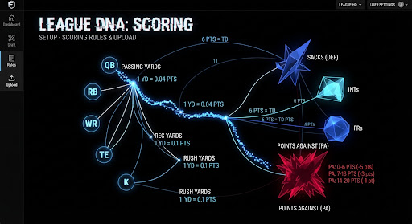
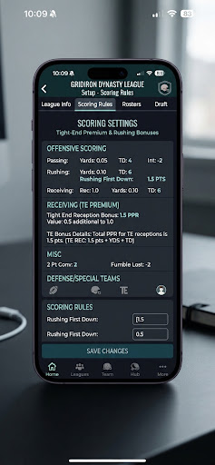
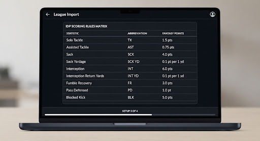

SETUP 3 OF 4
75% COMPLETE
tune
Rule Configuration
HOW DOES THIS LEAGUE SCORE?
Custom leagues have complex rules. Choose a standard institutional preset or upload screenshots to let AI automatically parse point matrices.
document_scanner
PARSER ENGINE V2
IMPORT FROM SCREENSHOT
Snap screenshots of your league settings on ESPN, Sleeper, or Yahoo. Upload multiples—our machine vision extracts yardage tiers, IDP, and exotic scoring rules instantly.
add_photo_alternate
[ + UPLOAD SETTINGS SCREENSHOTS ]
Drop PNG or JPEG • Up to 8 files
QUEUED CAPTURES (3)

check

check

sync
verified
Supported: Passing bonuses, TE premium, IDP, point-per-first-down